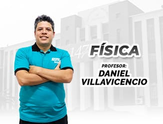

Dirección académica
Fundador y director de NostraProfe
Daniel Villavicencio
Profesor de Física · Especialista UNI
“La confianza comienza evaluando no solo cuánto sabe un profesor, sino también cómo enseña.”Conoce al comité académico